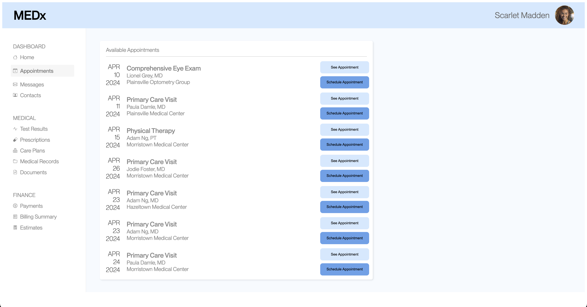

A/B Testing
Introduction
I used A/B testing to evaluate the disparity in user experience between scheduling a medical appointment on the original MEDx site (referred to as version A) and scheduling one on an updated site (version B). Version B incorporated alterations in font and button colors aimed at enhancing user experience and assessability. By monitoring user actions, duration, and clicks during the designated task of scheduling an appointment with Adam Ng on April 23rd in Morristown, I employed various statistical analyses to compare different metrics.
The objective was to determine whether a significant difference existed between the two sites and to identify which site outperformed the other in the selected metrics.
Original Site (Version A)
Updated Site (Version B)
Hypothoses
For this analysis I compared 3 metrics:
Misclick rate: the frequency with which users click something else on the page before finding the correct button for the task
Time on Page: time spent on the webpage for each user group (milliseconds). The page closes once the user succeeds in the assigned task of scheduling the appointment, so this can also be used to track the time it took to perform the task.
Time to First Click: time before the first click on the page for each user group (milliseconds)
Misclick Rate
Null Hypothesis: There is no difference between the misclick rate of page A and page B
Alternative Hypothesis: The misclick rate of page A is higher than page B
Prediction: I predict that we will find statistically significant evidence that the alternative hypothesis is true and the misclick rate of page A is different from that of page B.
By changing the colors of the “See Appointment” button and the “Schedule Appointment” users are less likely to accidentally hit the wrong button when scheduling the appointment, this seems likely to reduce the misclick rate, making page B's rate lower than that of page A.
Time on Page
Null Hypothesis: There is no difference between the time on page A and page B
Alternative Hypothesis: The time spent on page A is higher than page B
Prediction: I predict that we will find statistically significant evidence that the alternative hypothesis is true and the time spent on page A will be higher than B.
Since the text color has a higher contrast against the background, the text is more readable and should take less time to read. Additionally the differently colored buttons can make finding the correct button easier and faster. Based on these reasons, it seems likely it would take less time to succeed in the task when on page B and therefore less time would be spent on the page.
Time to First Click
I chose time to first click as my third metric since this can indicate how intuitive your site is on its initial load. Additionally, this can be an interesting metric to compare to the misclick rate and provide a lot more information. If both time to first click is high and misclick rate then it would suggest that the wrong button is the intuitive first move, however, other variations could provide other suggestions about what fixes are needed.
Null Hypothesis: There is no difference between the time to first click on page A and page B
Alternative Hypothesis: The time to first click on page A is higher than page B
Prediction: I predict that we will find statistically significant evidence that the alternative hypothesis is true and the time to first click on page A will be higher than B.
The alternative hypothesis hypothesis is likely to be true because with more readable text, people should spend less time trying to read the text and are more likely to click faster.
Statistical Analysis
Misclick Rate
I used a chi-squared test to analyze misclick rate since it relies on categorical (in this case Boolean) data on whether or not the user misclicked.
Chi^2 Value: 8.7912
P-Value: 0.003
Misclick Rate A: 0.5
Misclick Rate B: 0.11
Analysis: This statistical analysis supported my initial prediction and made me confident that page B had a significantly lower misclick rate. Since the p-value was less than .005, it is statistically significant and allows us to reject the null hypothesis in favor of the alternate hypthesis. Since the calculated misclick rate is 50% for site A and only 11% for site B, suggesting that not only is there a statistical difference between the two site, but that site A has a high misclick rate. The chi-squared value of 8.7912 supports a highest magnitude of deviation which also supports the theory that there is a significant difference between the frequencies on the two sites.
All together this allows us to reject the null hypothesis in favor of the alternate one, additionally suggesting that the misclick rate of page A is higher than page B. This indicates that the changes between page A and B led to a reduction in the misclick rate.
Time on Page
I used a one-tailed t-test to analyze the difference between time on site A and site B because time is a continuous variable and my alternative hypothesis was that time on B would be smaller. Therefore, since I wasn't just looking at if the two were different, I was also testing if one was smaller, so the one-tailed test made the most sense.
Avg(A): 36,139.458 milliseconds
Avg(B): 9,164.615 milliseconds
Std(A): 14,570.9 milliseconds
Std(B): 3,176.9 milliseconds
T-Score: -8.8766
P-value (B less than A): 0.0000000016
Analysis: Overall the results of the test support the alternative hypothesis, and my prediction, about page B having a lower time on page. The average value of time on B was less than time on A, and the p-value was extremely low suggesting that there was a statistically significant difference between the time on the two sites.
Based on this, we can reject the null hypothesis in favor of the alternative hypothesis that the time spent on page A is greater than page B.
Time until First Click
I used a one-tailed t-test to analyze the difference between time to first click on site A and site B because time is a continuous variable and my alternative hypothesis was that time to first click on B would be smaller. Therefore, since I wasn't just looking at if the two were different, I was also testing if one was smaller, so the one-tailed test made the most sense.
Avg(A): 14,476.875 milliseconds
Avg(B): 5,675.461 milliseconds
Std(A): 8,408.1 milliseconds
Std(B): 2,927.2 milliseconds
T-Score: -4.863
P-value (B less than A): 0.000019
Analysis: Overall the results of the test support the alternative hypothesis, and my prediction, about page B having a lower time before first click. The average value of time before first click on page A was 14,276 milliseconds, while it was only 5,675 milliseconds on page B. The P-value was extremely low, significantly below .05, suggesting that there is a statistically significant difference between the time before first click the two sites.
Based on this, we can reject the null hypothesis in favor of the alternative hypothesis that the time before first click on page A is significantly greater than page B.
Summary Statistics
| Version A | Version B | |
|---|---|---|
| Misclick Rate | .5 | .1 |
| Avg Time on Page | 36,139.46 ms | 9,164.61 ms |
| Time on Page Std | 14,570.9 ms | 3,176.9 ms |
| Avg Time to 1st Click | 14,476.87 ms | 5,675.46 ms |
| Time to 1st Click Std | 8,408.1 ms | 2,927.2 ms |
For this project we only collected 24 data points for page A and 23 for page B. In an ideal world we would gain more accurate results using larger quantities of data.
The large standard deviation for both metrics of page A suggests a significant range in user ease of experience, while the lower range for page B implies a more consistent user experience. The standard deviation also highlights the stark difference between the pages times with page A requiring significantly more time. These findings apply both to time on page, as well as time to first click.
Conclusion
All together the results of these tests allow me to reject all three of my null hypotheses in favor of my alternative hypotheses. Page B consistently outperformed page A in each of the chosen metrics, indicating that the changes applied in page B create a faster and more streamlined user experience, with fewer misclicks.